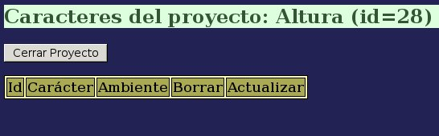
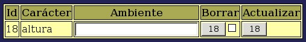
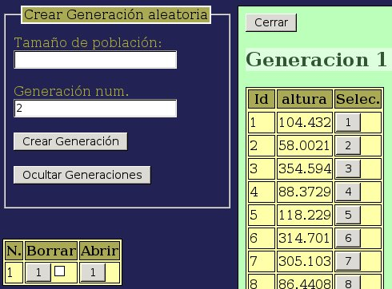

Una vez creado el carácter podemos utilizarlo en proyectos. Crearemos un nuevo proyecto al que podremos llamar “altura” y, una vez creado lo abrimos:

Una vez abierto volvemos a la página de “Caracteres” y sleccionamos el carácter:

Para generar variaciones fenotípicas debidas al ambiente debemos poner un valor distinto de 0 en el campo “Ambiente”. El valor de ese campo se expresa en las mismas unidades arbitrarias que se hayan elegido para el carácter. Con un poco de práctica se aprende a elegir unos valores acordes con el tipo de carácter que se haya diseñado. En nuestro caso haremos algunas consideraciones: las plantas más pequeñas tendrán un valor fenotípico en torno a 100, debido únicamente a la actuación del gen X. Aproximadamente un 10–20% de este valor causará una dispersión de los valores fenotípicos que no será demasiado grande como para que lleguen a ocultar todas las diferencias genotípicas, así que probaremos con un valor de 20 para el ambiente, y pulsamos el botón “Actualizar” para que ese valor de variaciones ambientales se tenga en cuenta en las poblacones que creemos a partir de este momento.
Iremos entonces a la página de “Generaciones”, y en el apartado “Crear Generación Aleatoria” ponemos un tamaño de población de 500 individuos y pulsamos en “Crear Generación”.
Pulsamos entonces en “Ver Generaciones” y abrimos la generación 1:

Bajamos entonces hasta el final de la tabla y descargamos el archivo con los datos generados a nuestro ordenador para realizar algún análisis estadístico.